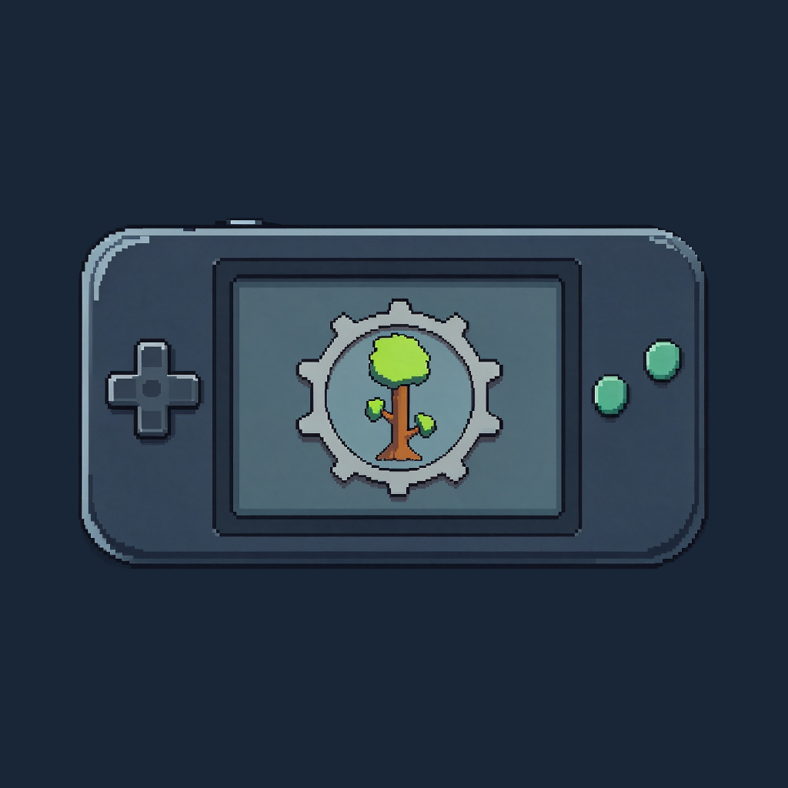

TML POCKET / MINIMAL IDENTITY · 02
一台掌机，一棵树。
用清晰轮廓代替设备插画，让桌面上的小图标也能认出来。
tML Pocket Launcher
竖向掌机对应 Pocket；屏幕中的几何树形呼应 Terraria。统一浅绿图形与深绿底色，保留树冠的像素阶梯。
96 PX
48 PX
32 PX
24 PX


单色轮廓仍完整可辨

原图 · 80px
横向主体，屏幕套着小徽章
简约版 · 80px
竖向主体，减少层级与细节
按 icon-design 的 S1 现代极简 + S7 双色原则直接绘制 SVG。圆形裁切和 24–1024px 导出见同目录文件。当前为设计预览。